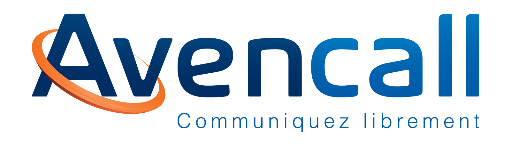
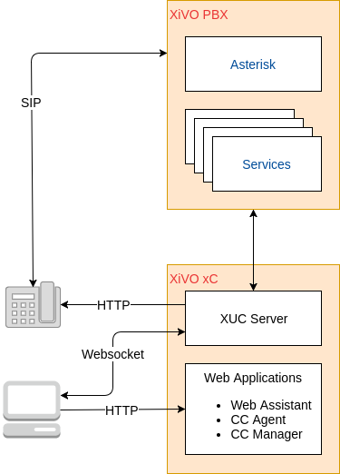
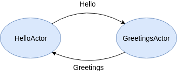
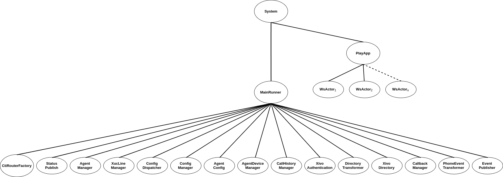
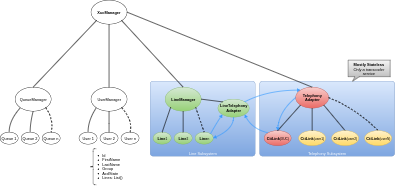

A humble feedback on Akka after some time in production


Akka is a toolkit for building highly concurrent, distributed, and resilient message-driven applications for Java and Scala
Akka is the implementation of the Actor Model on the JVM.
- Simpler Concurrent & Distributed Systems
- Resilient
- High Performance
- Elastic & Decentralized
Multi-threading for dummies
Jean-Yves Lebleu
Actors can:
class HelloActor extends Actor { override def receive = { case "Hello" => sender ! "Hi !" }

Simple use cases are easy to implement but complexity kicks pretty soon.
case class Hello(name: String) case class Greetings(message: String) class HelloActor(greetingsRef: ActorRef) { override def preStart: Unit = { greetingsRef ! Hello("Jean-Pierre") } override def receive = { case Greetings(message) => println(s"$greetingsRef told $message") } } class GreetingsActor extends Actor { override def receive = { case Hello(name) => // I can do something here... sender ! Greetings(s"Hi $name!") }
Akka guarantees for Actors:
Akka is a toolkit for building highly concurrent,
distributed, and resilient message-driven applications forJava andScala
One of our major problem was designing the Actor Hierarchy.

Or the lack of designing process…
Is the key to have a resilient and understandable system…

Designing will help you:
Bonus: The actor model is easily mapped from a real world model.
Without any strategy, actors can die and respawn without notice…
For each actor, you need to define a clear strategy for:
Again, designing a hierarchy of actors will help in this process.
Bonus: Scala offers case class, use them
Prefer waterfall for message vs ping pong Ask pattern or create temp action actor Avoid complex routing or message over encapsulation
Do not try to be accurate, best effort is almost always enough. Consistency Un message c'est déjà le passé
ActorRef vs Actor selection Registry
Leaking
Mix side-effect Alternatives : akka stream, monix, State become FSM